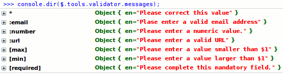
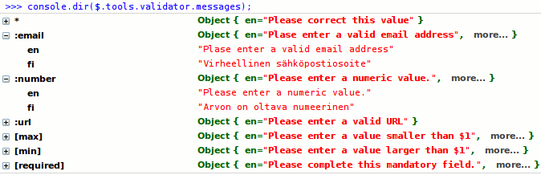
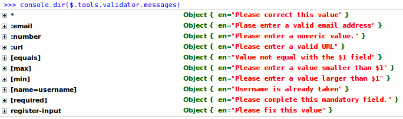

The 20 year wait is over. Enter the missing form validation tool. It takes the best parts of HTML 5 and Web Forms 2.0 standards and turns them into something pure amazing. All in 1.75 Kb of code.
<%@ include file="../demos/validator/index.htm" %>HTML5 provides new input types such as number, email and url, and attributes such as min, max, required and pattern. These work out of the box and will add a new dimension to your everyday forms. If that's not enough it's easy to create your own custom inputs.
You can fully control when, where and how the error messages are shown. Below, above or beside the field. All at once or one at the time. Big or small. Different languages for different locations. When an invalid field is edited the error message will dynamically change or disappear depending on the input.
You can use a generic invalidate function to display errors that occurred on the server-side. The logic is not tied to any particular server-side framework and it is easy to integrate into your existing server-side code. The only server requirement is the capability to return data in JSON format.
Web Forms 2.0 is a large and complex standard. This tool follows the standard and uses a sane subset of it. For example, you can use the form.checkValidity() method or you can define an oninvalid callback functions for your inputs.
You take any form you like, spice it up with new HTML5 input types and attributes and make a single call to jQuery Tools validator. Here is the HTML layout for the example form above:
And here is the validator call that enables form validation:
When the form is submitted the validator will make sure that the input fields pass all the rules that are defined for them. If there are any errors an error message appears above all failed fields. When the user starts fixing the values each error message will magically disappear once the input is valid. Look at the minimal setup for more details.
The tool validates all input fields except buttons and hidden fields inside a particular form. You can also select particular fields and validate them. For example:
Since v1.2.3 another $("...").validator() call would destroy the existing instance and will install a completely new validator instance.
<%--}}}--%>Please study the first demo "Minimal setup for Validator". It teaches you the basics of form validation.
<%--{{{ HTML --%>jQuery Tools Validator adds new input types and attributes to your form construction arsenal.
Now you can specify more than just "text", "checkbox" or "radio" for your type attribute. Here are the new types supported by validator:
| type | Description |
|---|---|
| Accepts a valid email address only. For example <input type="email" name="email" />. | |
| number | Accepts integer or floating point numbers only. |
| url | Accepts a valid URL only. |
HTML5 range and date types are also supported by using the rangeinput and dateinput Tools. Empty values are allowed for all input types. If you don't want to allow empty values use the required attribute.
For jQuery users the :email, :number and :url selectors are available for convenience.
| Attribute | Data Type | Description |
|---|---|---|
| max | Number |
Maximum numeric value for the field. Valid for number, text, date and range inputs. |
| min | Number |
Minimum numeric value for the field. Valid for number, text, date and range inputs. |
| pattern | RegExp |
Defines the required pattern or format for the input field's submitted value. Example: pattern="[0-9]" means that the input value must be a number between 0 and 9. It's recommend to use the "title" attribute to describe the pattern. |
| required | "required" |
Makes value submission mandatory for this field. The standard syntax is required="required" is needed! Plain required or required="true" does not work. This attribute works also with checkbox and SELECT fields. |
These good old HTML4 attributes have a role in form validation and will make your forms more user friendly:
| Attribute | Data Type | Description |
|---|---|---|
| disabled | |
Makes the field non-editable. The field cannot receive focus and is excluded from validation. The field appears "greyed out" in the browser. In HTML5 you should be able to disable/enable a set of inputs by enclosing them inside a fieldset element and toggling the disabled attribute of the fieldset element. However, this didn't work on Firefox 3.5 by the time of writing. |
| maxlength | number |
Attribute to restrict the input's length to a specific value. This will forbid the user from inputting more characters than are allowed. This behaviour is inherent for the browser and is not a feature of the validator tool. |
| readonly | |
Makes the field non-editable. The field can receive focus and is included in the validation. As with the disabled attribute the field appears "greyed out" in the browser but in a slightly different way. |
| title | string |
Provides advisory information about the element. You can often see this attribute being used for the wrong purpose. Some frameworks use it for validation error messages. This is wrong. Only use it to describe what kind of input the field accepts. |
Note: all the above attributes can be changed dynamically using jQuery's attr method. For example:
In addition to the above HTML attributes, jQuery Tools allows you to implement your own custom attributes for validation.
<%--}}}--%> <%--{{{ Configuration --%>| Property | Default | Description |
|---|---|---|
| effect | 'default' |
By default error messages are shown beside the input field. You can override this default behaviour altogether and make the error messages appear any way you like. for example, you can show all error messages inside one big container. Only the "default" effect is built-in. Look at the details of developing custom effects. |
| errorClass | 'invalid' |
A CSS class name that is assigned to the input field when a validation error occurs. |
| errorInputEvent | 'keyup' |
The event that triggers the input validity check. By default this occurs on every keystroke by the user. Other valid events include change, blur or null, the latter disabling input validation for a single field. |
| formEvent | 'submit' |
The event when form validation is performed. By default this happens when the form is submitted. Setting this to null prevents this behaviour. You can experiment with other events such as click and mouseover but it might not be worth the effort. |
| grouped | false |
When there are multiple rules specified for a field such as type="email" and required enabling this makes all error messages show up together instead of one at a time. |
| inputEvent | null |
You can validate an input field even though it's already valid. Setting keyup here validates the field every time a character is entered. By default the input is only validated when it has an invalid value as specified in the errorInputEvent configuration variable. Valid events for this property are keyup, change, blur or null. |
| lang | 'en' |
The language used in the error messages. See localization for details. |
| message | '<div/> |
HTML layout for the error message. The actual errors are span elements that are appended to the message element. This configuration option allows you to specify as complex a layout as you wish. You can for example add a nested div element as a placeholder for an arrow. |
| messageAttr | 'data-message' |
Name of the attribute that contains an error message to be shown when a validation error occurs for this field. This value overrides all validator specific error messages and does not care about (client-side) localization. Read more about input specific error messages. |
| messageClass | 'error' |
CSS class name defined for the error message element. |
| offset | [0, 0] |
Fine tunes the tooltip position specified with the position property. See the positioning details for more information. |
| position | 'center right' |
Specifies the position of the error message. See the positioning details for more information. |
| singleError | false |
Enabling this shows only one validation error at a time. |
| speed | 'normal |
Error message's fade-in speed. |
The error message position is specified with two different configuration properties: position and offset. The position property specifies the position in relation to the input field. For example, a value of 'bottom center' will place the message on the bottom edge of the input, centered horizontally. The following image illustrates the "slots" that you can use:
The offset property fine tunes the tooltip position specified with the position property. For example, the value [10, -20] moves the tooltip position 10px downwards and 20px to the left. The first value modifies the vertical positioning from the top edge of the tooltip and the second value modifies the horizontal positioning from the left edge of the tooltip. Positive values move the tooltip downward and to the right, while negative values move the tooltip upward and to the left.
The default error messages are contained in the $.tools.validator.messages object. Here is a screenshot of all the messages contained inside the validator as seen from the Firebug console.

The default error messages are in English. The * message is shown if there is no validator specific message available. If you want to provide error messages in other languages, use the $.tools.validator.localize method as follows:
The first argument is the language code and the second argument is an object containing the localized messages. After calling the localize command you can check that everything went well with the Firebug console:

The :email and :number localizations are opened. more… indicates objects that can be opened to inspect localized messages. As you can see, this is not the case for * and :url which were not localized. The $1 tokens in [max] and [min] are replaced with proper values once the message is shown to the user. You can take advantage of this variable substitution feature in your own custom validators.
Now if you want to use the Finnish localization in your form you need to set the lang configuration variable to "fi":
Sometimes you just need to localize a single validator function. In that case you can use the $.tools.validator.localizeFn function. For example:
This will modify existing languages and/or add new ones for this single validator only. Note that with both localization functions you can generate the messages dynamically via JavaScript if you need to. Localization objects are plain old and dynamic JavaScript objects after all.
You can explicitly define the error message for a field that is shown when validation fails. It can be defined with the data-message attribute. For example:
This will override any other error messages that are defined for the validation error. The drawback here is that you can only supply a single error message although there may be many different validation errors and that this error message cannot be localized. Of course you can supply a different value for this attribute on the server-side.
Here is the order in which the error message is selected starting from the step 1 and if none of the steps result in any error message then the final option is shown.
As you might have noticed, the name of the data-message attribute features a somewhat cumbersome data- prefix. This actually makes the attribute valid HTML5, and your fields will successfully pass a HTML5 validator. If you are one of those people who do not care about techy standards and want your forms to be more readable, you can change the name of this attribute from within the configuration using the messageAttr configuration variable.
<%--}}}--%> <%--{{{ custom validators --%>jQuery Tools Validator makes it easy to create new input types and attributes. When building your forms you'll typically use the built-in HTML5 features and also add a couple of your own custom validators. Here is an example:
You can find more examples here. Here is the $.tools.validator.fn and its arguments explained:
| Argument | Type | Description |
|---|---|---|
| matcher | string or function |
A jQuery selector that matches an input to be validated. For example the selector [name=password] will match all inputs whose "name" attribute is "password", and :file will match all file inputs. All jQuery selectors can be used to filter out desired inputs. You can also use function matchers. |
| errorMessages | string or object |
Optional error message associated with the validator. A string value defines a message in the default English language, and an object represents an error message in multiple languages, for example {en: 'English error message', fi: 'Finnish error message'}. You can also use variable substitution in your error messages. |
| validator | function |
This is the actual validator function that does the job. Inside the function the this-variable references the validator API. The function accepts two arguments: The first argument provides a jQuery object representing the element to be validated, and the second argument provides the invalid value. Four types of return values are supported
|
As you can see you can supply error messages in two ways: as the second argument to the $.tools.validator.fn function as well as by returning them from the validator function. When supplying them as the second argument you can take advantage of the centralized language configuration where the error messages can be changed and new languages can be added. When returning error messages from your validator you have much greater control of the dynamic construction of the error messages, but the messages are hard-coded inside your function.
If your validator function provides error messages in both of the previous ways, the one that is returned by the validator function takes precedence.
This feature is best explained by way of an example:
The error message given in the second argument contains two replacement tokens, $1 and $2, which will be expanded to the respective values of the two members in the Array returned by the validator function: [value1, value2].
Instead of a jQuery selector you can use a function to determine which fields are to be validated by your custom validator. For example:
Our matcher only selects inputs that are within a form with class name "register". This is probably not a real world situation, but it does show you how it works. You have complete control over the selection.
You can return the error message from the validator function directly. If you want to take advantage of the $.tools.validator.messages object in your localization, we need to have a key for your matcher. The key is given as a property of the validator function as follows:
Now you can inspect the custom validator in the $.tools.validator.messages object (last line):

<%--}}}--%> <%--{{{ API --%>First make sure you have familiarized yourself with jQuery Tools scripting.
| Method | Return value | Description |
|---|---|---|
| checkValidity() | boolean |
Performs the form validation routine. |
| destroy() | API |
Since 1.2.3 completely removes existing validator instance. |
| getConf() | Object |
Returns the configuration of the current validator instance. |
| getForm() | jQuery |
Returns the form element associated with the validator. May be null. |
| getInputs() | jQuery |
Returns all input fields associated with the validator. |
| invalidate(Object) | API |
Invalidates the form with the error messages given in the argument. Causes the onFail event and input specific ininvalid events to be fired. This function is useful for server-side integration. |
| reflow() | API |
since 1.2.4 repositions error messages correctly. Since messages are positioned absolutely in relative to the document body the messages can be misplaced when the form is moved or it's contents is manipulated. Calling this method fixes the situation. Reflow happens automatically when the window is resized. Repositioning works like a snap and cannot be seen with human eye. |
| reset(jQuery) | API |
since 1.2.2 resets the input fields that given in argument. This is opposite to the invalidate method making the fields valid. If no fields are give then all inputs are made valid. If you have a reset button on your form this reset function is automatically bind to it. |
First make sure you have read about Events in jQuery Tools. All event listeners receive an Event Object as the first argument.
You can view a demo here about validator events.
| Event | When does it occur? |
|---|---|
| onBeforeFail | Before a validation error occurs. The event is fired as many times as there are validation errors. Returning false causes a single error to be skipped. The second argument is the invalid input field, and the third argument is the matcher string associated with the validator function such as :email. |
| onBeforeValidate | Before the validation routine starts. Returning false causes the validation to be skipped altogether. The second argument is a jQuery object containing all invalid input fields. |
| onFail | After all errors are populated, but before they are displayed to the user. Returning false causes the underlying display effect to be skipped, and the error messages are not shown. The second argument is an array of Error objects. Each error object has two properties: input, which is the erroneous input, and messages, which is an array of error messages. |
| onSuccess | After the validation, if one or more fields are valid. The second argument is a jQuery object containing all fields that passed the validation. |
If you want to listen to validation errors on a field level you have the oninvalid method available. For example
Here is the logic taken from the server-side validation demo. Please read the comment blocks and see the natural and standards-based syntax.
Here we used the simple return value true to indicate that the data was valid on the server-side. You can do whatever you wish when the data is good. Here we replaced the form contents with a server-side page. If the data was not valid we use the invalidate method to display errors to the user. The invalidate method accepts an object argument which maps a field name to an error message like this:
You can switch the language of the errors on the server. Note: jQuery 1.4+ requires that both labels and values are quoted with double quotes on the returned JSON.
<%--}}}--%>The default validator effect is responsible for displaying the validation errors beside each input field and when the user fixes the problems the effect hides the associated error messages accordingly. If you want to alter this behaviour you can write your own custom validator effect. For example, you may want to show those errors in a single container instead of beside each input field.
Custom effects are added with the $.tools.validator.addEffect method. This method accepts three arguments. The first argument is the effect name, the second argument is a function that is called when there are validation errors available and the third argument is a function that is called when an input field switches from an invalid to a valid state. Here is an example:
The show function receives two arguments. The first argument is an array of Error objects. Each error object has two properties: input, which is the erroneous input, and messages which is an array of error messages. The second argument is the event that fired the validation. This may be the form submission or a change in an input field.
The hide function receives a jQuery object containing all input fields that are switching to a valid state after being invalid.
Take a look at a simple custom validator effect in action.